Data attribution · Lecture 2
Curvature at scale
From Hessian-vector products to the spectrum of a 100B-parameter model
Where we are
This morning gave the formula
$$\mathcal I_i=-\nabla\phi^\top(G+\lambda I)^{-1}\nabla L_i$$
For a 1B-parameter model, the matrix inside has $10^{18}$ entries.
The plan
Three questions need only products $v\mapsto Hv$
$v\ \mapsto\ Hv$
→
solve $(H+\lambda I)x=g$
→
top eigenpairs
→
spectral density $\rho(s)$: where the eigenvalues sit
$H$: the $P\times P$ Hessian of the training loss (or $G$, its Gauss–Newton part).
§1 · The primitive
How do you multiply by a Jacobian you can't even store?
§1 · Two directions
Forward and reverse mode
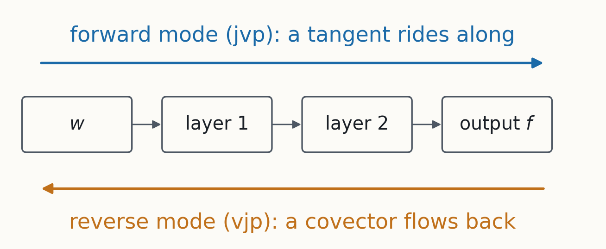
Forward mode pushes a tangent through; reverse mode pulls a covector back.
§1 · The two products
jvp and vjp, for a Jacobian $J$
$$\underbrace{v\mapsto Jv}_{\text{jvp}}\qquad\htmlClass{fragment}{\underbrace{u\mapsto J^\top u}_{\text{vjp}}}$$
Each costs a few forward passes, at any size; backprop is a vjp.
§1 · A tiny example
Forward mode is arithmetic with dual numbers
$$\begin{aligned}
&f(x_1,x_2)=x_1x_2+\sin x_1,\qquad x_1=1+\varepsilon,\ \ x_2=2,\ \ \varepsilon^2=0\\[6pt]
&\htmlClass{fragment}{f=(2+\sin 1)+(2+\cos 1)\,\varepsilon}
\end{aligned}$$
The $\varepsilon$-coefficient is $\partial f/\partial x_1$: a jvp with $v=(1,0)$.
§1 · From gradients to Hv
Move along $v$ and watch the gradient
$$\nabla L(w+rv)=\nabla L(w)+r\,Hv+O(r^2)$$
The gradient changes along $v$ at rate $Hv$.
§1 · From gradients to Hv
So $Hv$ is a directional derivative of the gradient
$$Hv=\frac{d}{dr}\,\nabla L(w+rv)\Big|_{r=0}$$
And a directional derivative is exactly what a jvp computes.
§1 · Pearlmutter's trick
$Hv$ is a jvp of the gradient function
$$Hv=\operatorname{jvp}\big(\nabla L;\ w,\ v\big)\qquad\htmlClass{fragment}{=\ \nabla_w\big(\nabla L^\top v\big)}$$
Exact, for about two to three gradients' worth of work.
§1 · Gauss–Newton
The Gauss–Newton product, piece by piece
$$Gv=\sum_i\ \underbrace{J_i^\top}_{\text{vjp}}\ \underbrace{H_{y,i}}_{\substack{\text{loss Hessian}\\ \text{in the outputs}}}\ \underbrace{(J_iv)}_{\text{jvp}}$$
$J_i$: the Jacobian of the outputs on example $i$. One jvp, a small multiply, one vjp.
§1 · Without double differentiation
Or just take two ordinary gradients
$$Hv\approx\frac{\nabla L(w+\epsilon v)-\nabla L(w-\epsilon v)}{2\epsilon}$$
Works inside any training loop. But which $\epsilon$?
§1 · Two errors
Truncation versus round-off
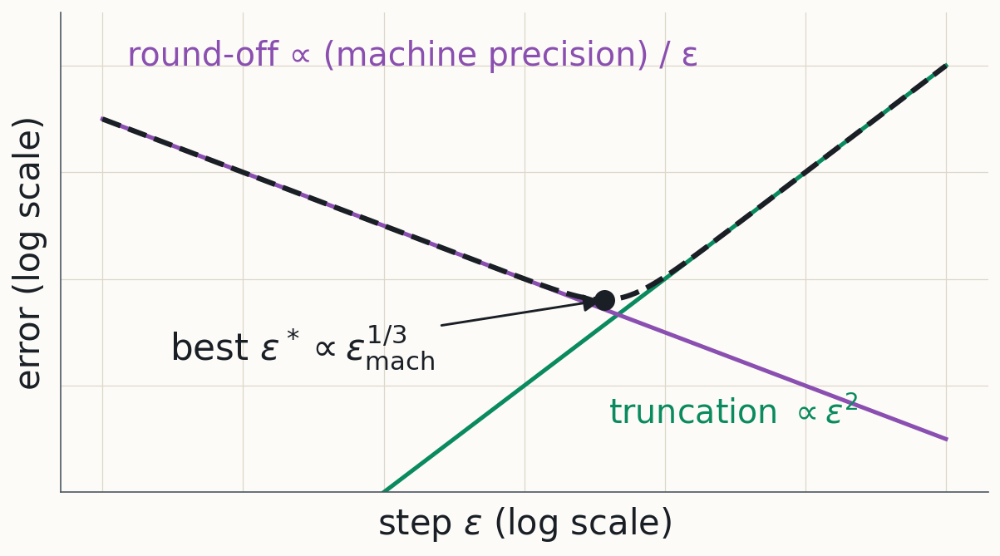
Shrink $\epsilon$ and round-off grows; enlarge it and truncation grows.
§1 · Measured
On a real network you get the V
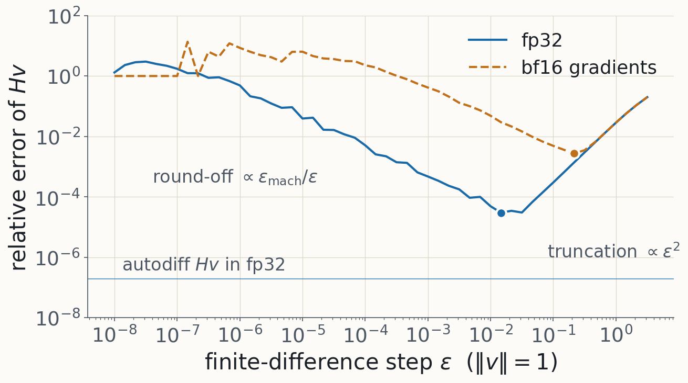
The best $\epsilon$ moves with precision: sweep it against an exact $Hv$.
§1 · Takeaway
$Hv$ costs a few gradients: exact by autodiff, or two gradients and a well-chosen $\epsilon$.
§2 · What products buy
You have a function that returns $Hv$. What can you compute with it?
§2 · Hutchinson
A trace from ten products
$$\operatorname{tr}H=\mathbb E_v\big[v^\top Hv\big]\quad\text{for }\mathbb E[vv^\top]=I$$
Hutchinson: random $\pm1$ probes $v$, one $Hv$ each.
§2 · Solves
Solves are the expensive question
- An IF needs one solve per query.
- Iterative solvers can need thousands of $Hv$ per solve.
- That cost is why DA2 uses EK-FAC for IFs.
§2 · Eigenvalues
How do you find the top eigenvalues from $Hv$ alone?
§2 · Krylov
Repeated multiplication tilts $v$ toward the top
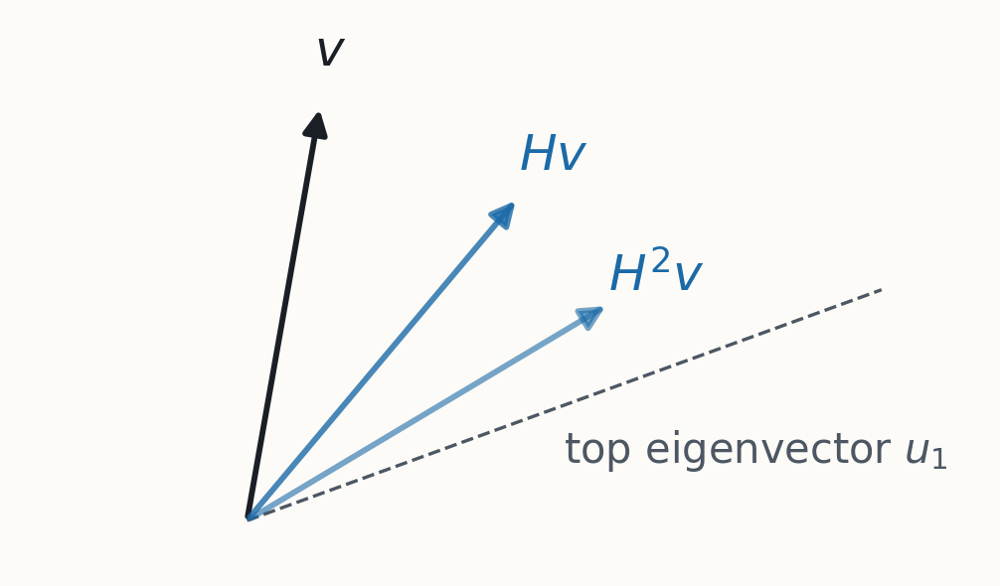
Keep all of $v, Hv, H^2v,\dots$: their span is the Krylov subspace.
§2 · Lanczos
$m$ products compress $H$ to a tridiagonal matrix
$$T_m=Q_m^\top H Q_m=\begin{pmatrix}\alpha_1&\beta_1&\\ \beta_1&\alpha_2&\ddots\\ &\ddots&\ddots\end{pmatrix}$$
$H$ restricted to the Krylov basis $Q_m$; its eigenvalues, the Ritz values $\theta_k$, approximate $H$'s.
§2 · A 4×4 example
A 4×4 example: watch the Ritz values
$$\begin{aligned}
m=1:&\quad 0.55\\
\htmlClass{fragment}{m=2:}&\quad\htmlClass{fragment}{0.30,\ \ 4.82}\\
\htmlClass{fragment}{m=3:}&\quad\htmlClass{fragment}{0.23,\ \ 0.81,\ \ 5.00}\\
\htmlClass{fragment}{m=4:}&\quad\htmlClass{fragment}{0.2,\ \ 0.5,\ \ 1,\ \ 5}
\end{aligned}$$
True eigenvalues $0.2,\ 0.5,\ 1,\ 5$: the extremes arrive first.
§2 · On a network
Outliers converge fast; the bulk is slow
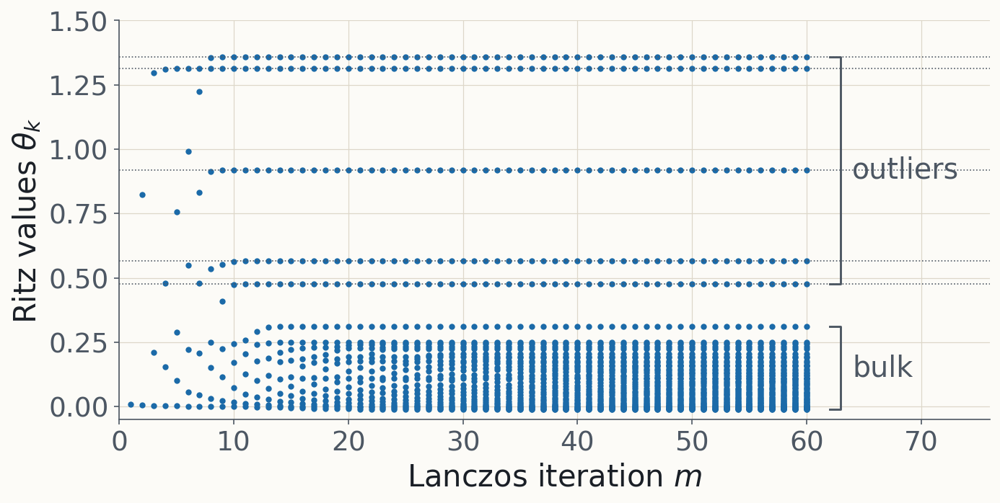
Toy MLP: the five outliers are done by about $m=12$.
§2 · Floating point
Without reorthogonalization: ghosts
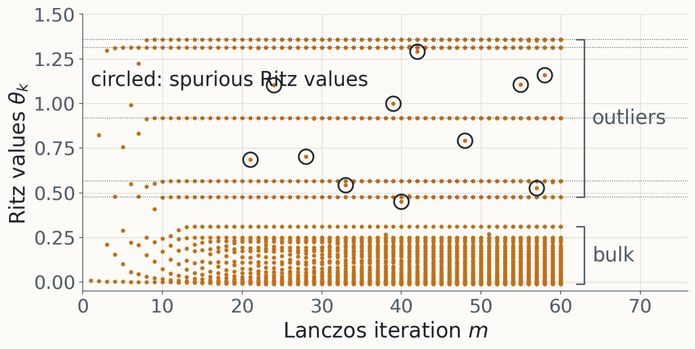
Lost orthogonality creates spurious Ritz values and copies of converged ones.
§2 · The memory wall
Reorthogonalizing needs every basis vector
$$\text{one vector}=P\ \text{numbers}:\quad P=10^{11}\ \text{in bf16}\ \Rightarrow\ 200\ \text{GB}$$
Keeping $m$ of them is out of reach at LLM scale, so $m$ stays small.
§2 · Takeaway
Lanczos finds the outliers in a few steps; the bulk stays a blur.
§3 · The whole spectrum
Lanczos found the outliers. Can the same $T_m$ give the whole spectrum?
§3 · Step 1
What a single probe sees
$$v^\top f(H)\,v=\sum_j\,(v\cdot u_j)^2\,f(\lambda_j)$$
Each eigenvalue, weighted by the probe's overlap with its eigenvector.
§3 · Step 2
That sum is an integral against sticks
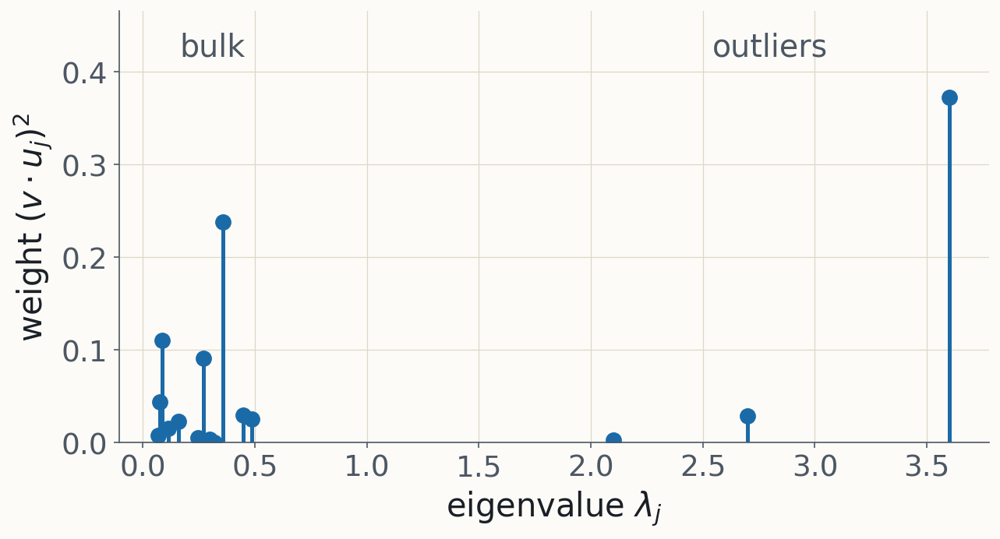
$v^\top f(H)v=\int f\,d\mu_v$: a stick at each $\lambda_j$, height $(v\cdot u_j)^2$.
§3 · Step 3
Lanczos gives the Gauss rule for those sticks
$$e_1^\top f(T_m)\,e_1=\sum_{k=1}^m\tau_k^2\,f(\theta_k)$$
Nodes $\theta_k$: the Ritz values; weights $\tau_k^2$ from $T_m$'s eigenvectors; exact to degree $2m-1$.
§3 · A tiny example
Three sticks, two nodes
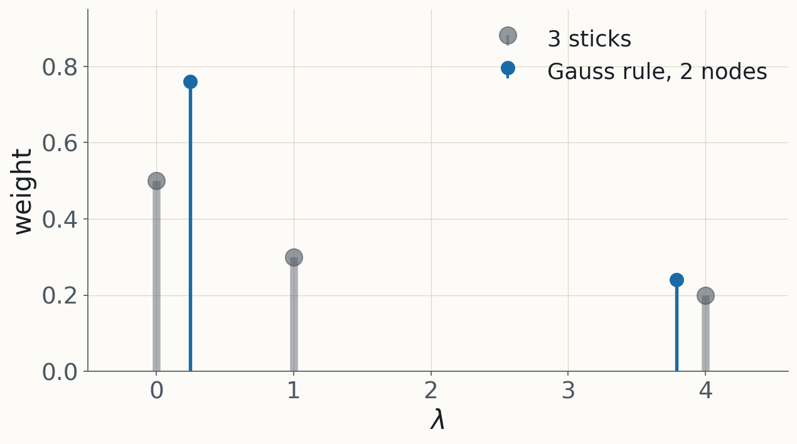
Two nodes reproduce moments 0 to 3 of the three sticks exactly.
§3 · Stochastic Lanczos quadrature
Average the rules over a few random probes
$$\hat\rho(s)=\frac1{n_v}\sum_{\text{probes}}\ \sum_{k=1}^m\tau_k^2\,\delta(s-\theta_k)$$
Averaging $n_v$ random probes estimates $\rho$; finite $m$ adds quadrature error.
§3 · What SLQ sees
Ten steps place the outliers; the bulk needs more
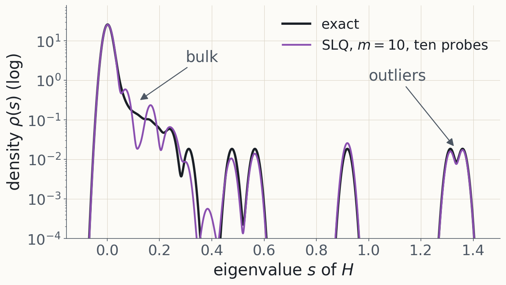
Toy MLP: at $m=10$ the outliers are right and the bulk is lumpy.
§3 · Takeaway
A few probes times a few Lanczos steps give a spectral density: sharp outliers, blurry bulk.
§4 · Trained networks
What does the Hessian spectrum of a trained network look like?
§4 · Classifiers
A bulk and a few outliers
- A bulk of eigenvalues near zero.
- About $C$ large outliers, $C$ the number of classes.
- The outliers come from class structure in $G$.
§4 · Language models
For a language model, $C$ is the vocabulary
$$C=|\text{vocabulary}|\approx10^4\text{–}10^5$$
"A few outliers" may be tens of thousands; $m=10$ cannot resolve them.
§4 · Takeaway
Classifiers: a bulk plus about $C$ outliers. Language models: still an open case.
§5 · Granziol & Juarev (2026)
How do you get $Hv$ from a 120B model sharded across GPUs?
§5 · The move
Finite differences, one shard at a time
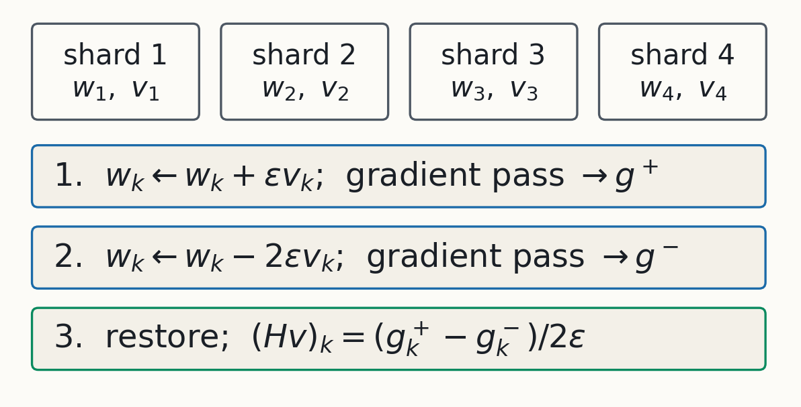
Two ordinary gradient passes: a Lanczos step costs about two training steps.
§5 · Finding 1
The step size can fake a spectrum
- $\epsilon=10^{-5}$ or $10^{-2}$: no separated outliers.
- $\epsilon=10^{-4}$ or $10^{-3}$: clear outliers.
- Which is right? Only an exact-$Hv$ check can say.
§5 · Finding 2
A 120B model shows large negative curvature
- gpt-oss-120b: ten Lanczos steps, no $\epsilon$ sweep.
- Real curvature, or an artefact of $\epsilon$ or Lanczos?
- The authors call it "only indicative".
§5 · Finding 3
Per-layer (block-diagonal) curvature can be wrong by $O(1)$
$$\frac{\|(Hv)_b-H_{bb}v_b\|}{\|(Hv)_b\|}\ \approx\ 1$$
$b$: one transformer layer. Dropping cross-layer blocks loses about as much as it keeps.
§5 · Takeaway
At 120B the primitive still works; its knobs still need checking.
§6 · Back to attribution
What does the spectrum tell you about influence?
§6 · The IF in G's eigenbasis
In $G$'s eigenbasis $(s_k,u_k)$, each direction gets its own weight
$$\mathcal I_i=-\sum_k\frac{(u_k\cdot\nabla\phi)\,(u_k\cdot\nabla L_i)}{s_k+\lambda}$$
Far below $\lambda$: a scaled gradient dot product. Near or above: curvature-weighted.
§6 · Where λ sits
Where $\lambda$ sits decides which directions count as curvature
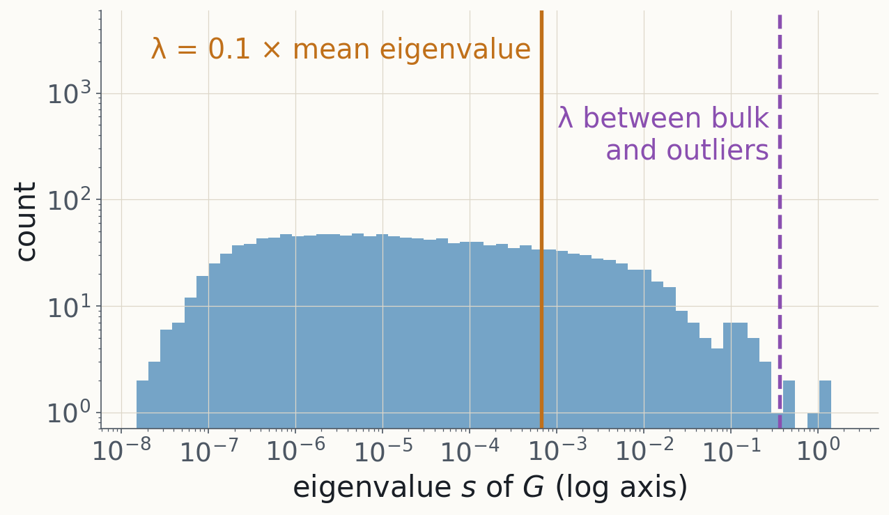
Left of $\lambda$: a scaled gradient dot product. Right of it: curvature-weighted.
§6 · Auditing
Check the approximation, not just the answer
- EK-FAC assumes block-diagonal curvature.
- Dropping cross-layer blocks already costs $O(1)$ in $Hv$.
- Check against exact products: $Gv$ for EK-FAC, $Hv$ for Hessians.
§6 · Takeaway
The spectrum shows what your damping and your approximation are doing.
Summary
Three things to keep
- $v\mapsto Hv$ costs a few gradients.
- Lanczos and SLQ: outliers fast, a density from few probes.
- Check step sizes and approximations against exact products.
Readings · Importance / Length